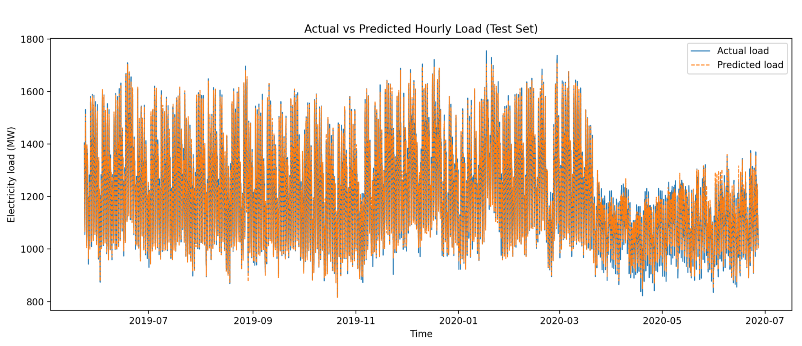
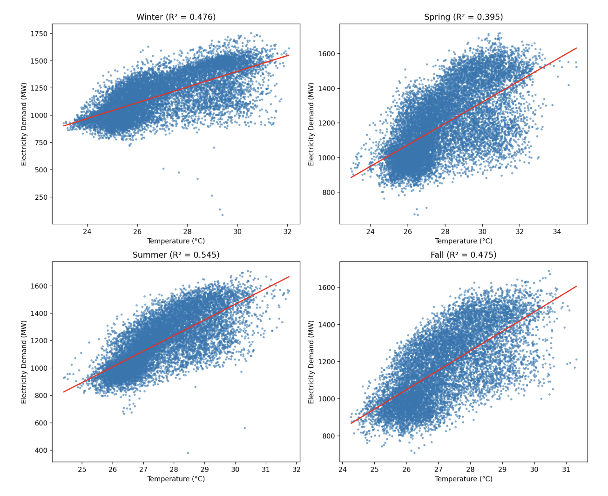
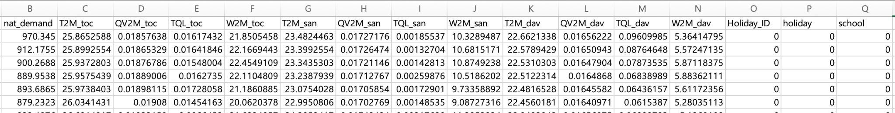

Project 2 — Hourly Electricity Load Forecasting
Build an end-to-end machine learning pipeline to forecast hourly national electricity demand for BEMS decision support.
Time Series Feature Engineering Random ForestRandom Forest Regressor
R² ≈ 0.986
Temp only: R² ≈ 0.42
Overview
Accurate load forecasting is essential for Building Energy Management Systems (BEMS) to optimize HVAC control, energy storage scheduling, and demand response.
This project evaluates how well machine learning models capture hourly and daily electricity demand patterns.
Dataset & Key Observation
The dataset contains hourly electricity demand along with weather and calendar variables.
Why Temperature Alone Is Not Enough
Exploratory analysis shows that temperature alone explains less than half of the electricity demand variation (R² ≈ 0.42).
Temperature alone explains less than half of demand variation, highlighting the importance of temporal patterns.
Method
A full pipeline including preprocessing, feature engineering, and model training was constructed.
Lag features and calendar variables significantly improved performance.
Results
The final Random Forest model achieved strong performance, closely tracking actual electricity demand.
Why Temperature Alone Is Not Enough
Seasonal effects increase demand both in summer (cooling) and winter (heating), making a single linear relationship insufficient.

Conclusion
This project demonstrates how time-series feature engineering and ensemble models can significantly improve load forecasting accuracy.
The approach is directly applicable to real-world BEMS optimization.